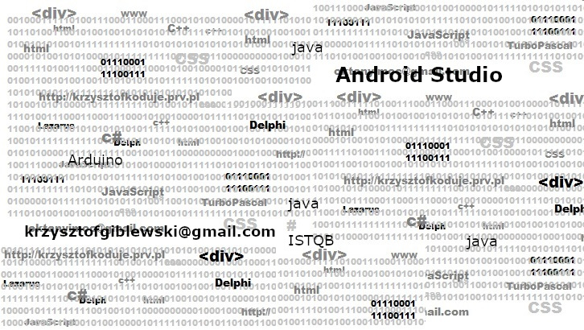

Kilkanaście lat temu zacząłem samodzielnie "programować". Programować napisałem w cudzysłowie żeby prawdziwi programiści nie zabili mnie śmiechem. Przez lata nazbierał się mniej lub bardziej pożytecznych programów, postanowiłem dla siebie kilka ocalić przed zapomnieniem. Moje pierwsze kroki zaczeły się od Turbo Pascala następnie trafiłem na Delphi i to było coś. Napisałem też jakiś programik w Microsoft Visual Studio a obecnie pisze w darmowym środowisku Lazarus. Jakiś czs temu uzyskałem certyfikat ISTQB i skończyłem kurs programowania w jezyku Java.
